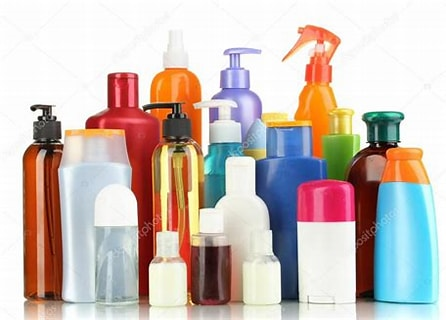

Try with different products
- Use mineral foundation. If you are worried that regular foundation will worsen dry skin or acne problems, mineral foundation may be a good alternative.
- Apply BB cream. BB Cream is an all-in-one cosmetic that acts as a moisturizer, primer, SPF and foundation, reducing the amount of time it takes to put on makeup.
- Experiment with contouring. Contouring is a makeup technique that allows you to subtly alter your face shape.

After reading all the material ,please complete the following questions.
Home Page
Next
Previous